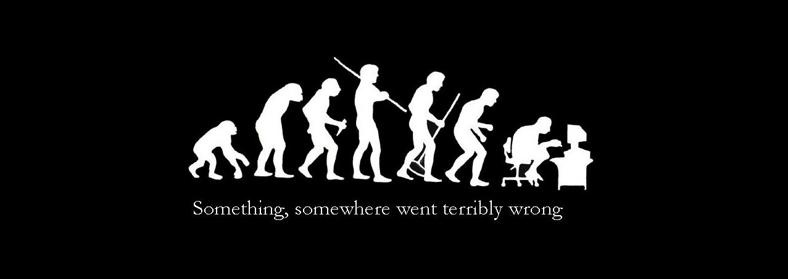

Evolve
生物突变可分为基因重组﹑基因突变与染色体畸变。

- 基因重组是指由于不同DNA链的断裂和连接而产生DNA片段的交换和重新组合，形成新DNA分子的过程。发生在生物体内基因的交换或重新组合时期。
- 基因突变是指染色体某一位点上发生的改变，又称点突变。发生在生殖细胞中的基因突变所产生的子代将出现遗传性改变。发生在体细胞的基因突变，只在体细胞上发生效应，而在有性生殖的有机体中不会造成遗传后果。
- 染色体畸变包括染色体数目的变化和染色体结构的改变，前者的后果是形成多倍体，后者有缺失、重复、倒立和易位等方式.
突变在自然状态下可以产生，也可以人为地实现。前者称为自发突变，后者称为诱发突变。自发突变通常频率很低，每10万个或 1亿个碱基在每一世代才发生一次基因突变。诱发突变是指用诱变剂所产生的人工突变。诱发突变实验始于1927年，美国遗传学家H.J.马勒用X射线处理果蝇精子，获得比自发突变高9～15倍的突变率。此后，除 X射线外，γ射线、中子流及其他高能射线，5-嗅尿嘧啶、2-氨基嘌呤、亚硝酸等化学物质，以及超高温、超低温，都可被用作诱变剂，以提高突变率。
突变的分子基础是核酸分子的变化。基因突变只是一对或几对碱基发生变化。其形式有碱基对的置换，如DNA 分子中A-T碱基对变为T-A碱基对；另一种形式是移码突变。由于 DNA分子中一个或少数几个核苷酸的增加或缺失，使突变之后的全部遗传密码发生位移，变为不是原有的密码子，结果改变了基因的信息成分，最终影响到有机体的表现型。同样，染色体畸变也在分子水平上得到说明。自发突变频率低的原因是由于生物机体内存在比较完善的修复系统。修复系统有多种形式，如光修复、切补修复、重组修复以及 SOS修复等。修复是有条件的，同时也并非每个机体都存在这些修复系统。修复系统的存在有利于保持遗传物质的稳定性，提高信息传递的精确度。
突变是向所有方向上变异
- 例1：在一个封闭的山地，大雪积年不化，地表呈现出白色，在这个地区长有充足的草，生活着一群灰兔子和一群灰狼，狼以兔子为食。
兔子繁殖下一代时会产生基因变异，但是这种变异是充满不确定性的，会产生任何可能，比如，毛色变成红色、蓝色、绿色、黑色、白色，各种各样。
然后，因为白色的兔子能够有更好的伪装，而其他毛色的兔子则没有这种优势，所以在生活中更容易被敌害发现并作为目标，于是在这种趋势下，白色兔子的数量会相对多于非白色的。最终，白色兔子会占据兔子总数的全部。对于狼来说同样如此，变异出白色的狼更用以伪装便于捕猎，不会被饿死，能够大量繁殖，而其他颜色的狼难以捕捉到猎物，趋向于消亡。于是在人类看来，兔子和狼为了更好的伪装自己，将自己的毛色换成了白色。 - 例2：有一群苍蝇在森林里生活，森林里的食物很少，而且分布很广，那么嗅觉灵敏的苍蝇能够更好的找到食物，便不会被饿死，而嗅觉不够灵敏的苍蝇，则每次觅食都是慢其他同伴一步，最后被饿死，于是嗅觉灵敏的能够更好的繁殖，最终，这群苍蝇都是由嗅觉灵敏的组成的。
- 例3：水生环境中，水流的阻力成为了一种自然选择压力，游得慢的动物很难逃脱捕食者，同样，追上猎物也会变困难，结果很容易死掉。于是，解决水的阻力就变成了一种进化的方向。当某个生物获得了一个遗传突变，比如，具备了比同类更能减小阻力的体形；那它游得快，不容易被捉住，猎取的食物也多，营养状态便更好，它就更可能繁殖成功，而它的后代也更容易繁殖成功——拥有这个突变的个体在整个种群中的比重会逐渐增加，甚至最终将其它同类排除出去，于是，遗传突变就变成了整个物种的普遍特征。而且，这样的事情在不断的重演，比如鱼、鱼龙、企鹅和鲸，分别属于鱼类、古爬行类、鸟类和哺乳类，它们祖先的体态不同，在地球上演化成功的时间也不同，但最终的体型都变成了鱼形。
人类与其他生物
最能适应环境的生物应该是那些基因能够适应环境的生物，但是环境是改变的，基因的改变来自于繁殖时的变异，所以，最能适应环境的物种是迭代最为频繁的物种，例如，苍蝇和蜜蜂，蚂蚁.
对于人类来说，一个已出生的人不可能改变他身上现有的上亿细胞的DNA，但是人类通过掌握的知识来改变环境，使环境适合自己，达到生存的目的。